![]()
if (!require(devtools, quietly = TRUE)) {
install.packages("devtools")
library(devtools)
}
# simulated data (will take time to download)
# devtools::install_github("go-bayes/margot")
library("margot")
library("margot")
# List all datasets available in the package
# data(package = "margot")
#data("df_nz", package = "margot")
# for equations
# if (!require(devtools, quietly = TRUE)) {
# install.packages("remotes")
# library(remotes)
# }
# remotes::install_github("datalorax/equatiomatic")
#
# library("equatiomatic")
# data wrangling
if (!require(tidyverse, quietly = TRUE)) {
install.packages("tidyverse")
library(tidyverse)
}
# regression splines
# for equations
if (!require(devtools, quietly = TRUE)) {
install.packages("splines")
library(splines)
}
# reports
if (!require(report, quietly = TRUE)) {
install.packages("report")
library(report)
}
# for equations
if (!require(performance, quietly = TRUE)) {
install.packages("performance")
library(performance)
}
# graphs
if (!require(ggeffects, quietly = TRUE)) {
install.packages("ggeffects")
library(ggeffects)
}
# more graphs
if (!require(sjPlot, quietly = TRUE)) {
install.packages("sjPlot")
library(sjPlot)
}
# data wrangling
if (!require(dplyr, quietly = TRUE)) {
install.packages("dplyr")
library(dplyr)
}
# graphing
if (!require(ggplot2, quietly = TRUE)) {
install.packages("ggplot2")
library(ggplot2)
}
# summary stats
if (!require(skimr, quietly = TRUE)) {
install.packages("skimr")
library(skimr)
}
# tables
if (!require(gtsummary, quietly = TRUE)) {
install.packages("gtsummary")
library(gtsummary)
}
# easy tables
if (!require(table1, quietly = TRUE)) {
install.packages("table1")
library(table1)
}
# table summaries
if (!require(kableExtra, quietly = TRUE)) {
install.packages("kableExtra")
library(kableExtra)
}
# multi-panel plots
if (!require(patchwork, quietly = TRUE)) {
install.packages("patchwork")
library(patchwork)
}
if (!require(performance, quietly = TRUE)) {
install.packages("performance")
library(performance)
}
Note
Required - (Hernan and Robins 2020) Chapter 6 link
Optional
- (Suzuki, Shinozaki, and Yamamoto 2020) link
- (J. A. Bulbulia 2024) link
- (Neal 2020) Chapter 3 link
Neal, Brady. 2020. “Introduction to Causal Inference from a Machine Learning Perspective.” Course Lecture Notes (Draft). https://www.bradyneal.com/Introduction_to_Causal_Inference-Dec17_2020-Neal.pdf.
Bulbulia, J. A. 2024. “Methods in Causal Inference Part 1: Causal Diagrams and Confounding.” Evolutionary Human Sciences 6: e40. https://doi.org/10.1017/ehs.2024.35.
Suzuki, Etsuji, Tomohiro Shinozaki, and Eiji Yamamoto. 2020. “Causal Diagrams: Pitfalls and Tips.” Journal of Epidemiology 30 (4): 153–62. https://doi.org/10.2188/jea.JE20190192.
Hernan, M. A., and J. M. Robins. 2020. Causal Inference: What If? Chapman & Hall/CRC Monographs on Statistics & Applied Probab. Taylor & Francis. https://www.hsph.harvard.edu/miguel-hernan/causal-inference-book/.
Key concepts for the test(s):
- M-bias
- Regression
- Intercept
- Regression Coefficient
- Model Fit
- Why Model Fit is Misleading for Causality
For the lab, copy and paste code chunks following the “LAB 3” section.
Note: you may also download the lab here Download the R script for Lab 03
Seminar
Learning Outcomes
You will learn how to use causal diagrams to evaluate the “no unmeasured confounding” assumption of causal inference.
You will understand how time-series data-collection may address common confounding problems.
You will understand why time-series data-collection are insufficient for addressing other common confounding problems.
Confounding problems resolved by time-series data
Figure 3 presents the structural features of seven confounding problems. We shall discuss examples of each, and how longitudinal data collection resolves each problem.
Bulbulia, J. A. 2024. “Methods in Causal Inference Part 1: Causal Diagrams and Confounding.” Evolutionary Human Sciences 6: e40. https://doi.org/10.1017/ehs.2024.35.
Confounding problems not resolved by time-series data alone
Figure 2 presents six examples of time-series data that are not resolved by longitudinal data collection. Before seminar, consider why time series data are insufficient to address confounding in each of the six scenarios described in this figure.
Bulbulia, J. A. 2024. “Methods in Causal Inference Part 1: Causal Diagrams and Confounding.” Evolutionary Human Sciences 6: e40. https://doi.org/10.1017/ehs.2024.35.
Worked Example: The Assumptions in Causal Mediation
Bulbulia, J. A. 2024. “Methods in Causal Inference Part 1: Causal Diagrams and Confounding.” Evolutionary Human Sciences 6: e40. https://doi.org/10.1017/ehs.2024.35.
Lab 3
Regression
This week we introduce regression.
Learning Outcomes
By learning regression, you will be better equipped to do psychological science and to evaluate psychological research.
What is Regression?
Broadly speaking, a regression model is a method for inferring the expected average features of a population and its variance conditional on other features of the population as measured in a sample.
We’ll see that regression encompasses more than this definition; however, this definition makes a start.
To understand regression, then, we need to understand the following jargon words: population, sample, measurement, and inference.
What is a population?
In science, a population is a hypothetical construct. It is the set of all potential members of a set of things. In psychological science, that set is typically a collection of individuals. We want to understand “The population of all human beings?” or “The New Zealand adult population”; or “The population of undergraduates who may be recruited for IPRP in New Zealand.”
What is a sample?
A sample is a randomly realised sub-population from the larger abstract population that a scientific community hopes to generalise about.
Think of selecting balls randomly from an urn. When pulled at random, the balls may inform us about the urn’s contents. For example, if we select one white ball and one black ball, we may infer that the balls in the urn are not all white or all black.
What is “measurement”?
A measure is a tool or method for obtaining numerical descriptions of a sample. We often call measures “scales.”
A measurement is the numerical description we obtain from sensors such as statistical surveys, census data, twitter feeds, & etc.
In the course, we have encountered numerical scales, ordinal scales, and factors. The topic of measurement in psychology is very broad. As we shall see, the trail of the serpent of measurement runs across comparative psychological research.
It is essential to remember that measures can be prone to error.
Error-prone scales may nevertheless be helpful. However, we need to investigate their utility against the backdrop of specific interests and purposes.
What is a parameter?
In regression, we combine measurements on samples with probability theory to guess about the properties of a population we will never observe. We call these properties “parameters.”
What is statistical inference?
The bulk of statistical inference consists of educated guessing about population parameters.
Probability distributions and statistical guessing
Inference is possible because the parameters of naturally occurring populations are structured by data-generating processes that are approximated by probability distributions. A probability distribution is a mathematical function describing a random event’s probability. Today we will be focusing on height.1
1 The relationship of probability distributions and data-generating processes is complex, intriguing, and both historically and philosophically rich \dots. Because our interests are applied, we will hardly touch up this richness in this course.
Today we will discuss the “normal” or “Gaussian distribution.” A large number of data-generating processes in nature conform the normal distribution.
Let’s consider some examples of randomly generated samples, which we will obtain using R’s rnorm function.
10-person sample of heights
# seed
set.seed(123)
# generate 10 samples, average 170, sd = 20
draws_10 <- rnorm(10, mean = 170, sd = 20)
# ggplot quick-histogram
ggplot2::qplot(draws_10, binwidth = 2)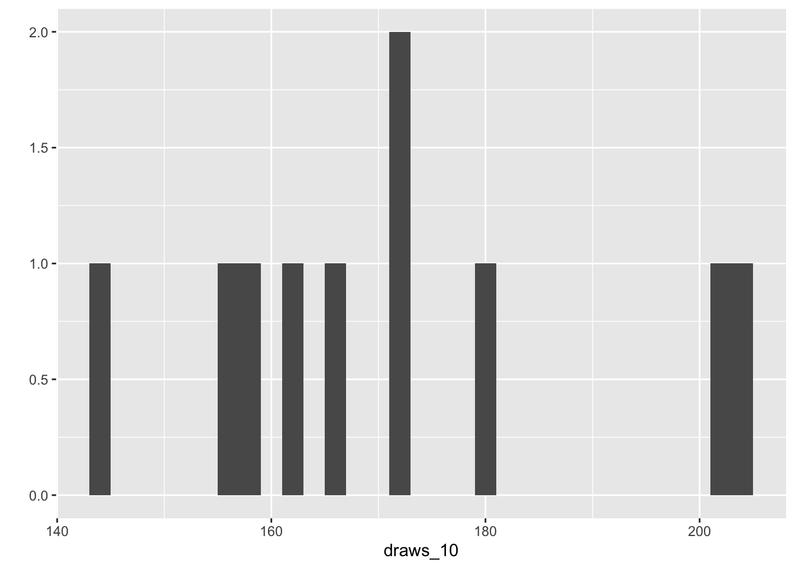
100-person sample of heights
# reproducibility
set.seed(123)
# generate 100 samples, average 170, sd = 20
draws_100 <-rnorm(100, mean = 170, sd = 20)
# graph
ggplot2::qplot(
draws_100, binwidth = 2
)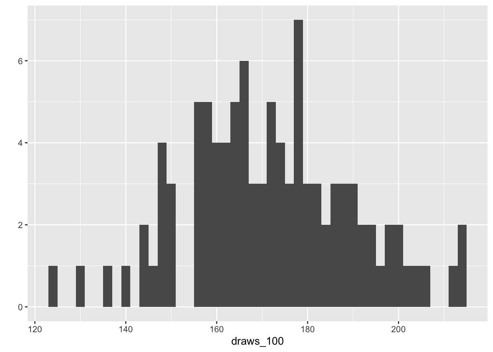
10000-person sample of heights
# reproducibility
set.seed(123)
# N = 10,000
draws_10000 <- rnorm(1e5, mean = 170, sd = 20)
# plot
ggplot2::qplot(draws_10000, binwidth = 2)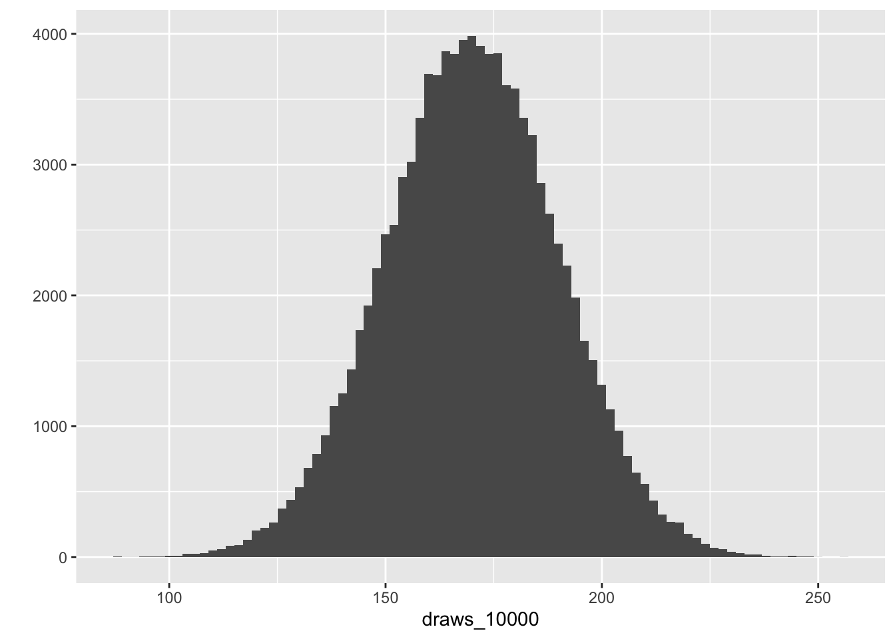
How can I use regression to infer a population parameter?
We can use R to investigate the average height of our imaginary population from which the preceding samples were randomly drawn. We do this in R by writing an “intercept-only” model as follows:
# syntax for an intercept-only model
model <- lm(outcome ~ 1, data = data)
# base R summary
summary(model)Using the previous simulations:
N = 10 random draws
#|code-fold: false
#write the model and get a nice table for it
sjPlot::tab_model(lm(draws_10 ~ 1))| Dependent variable | |||
| Predictors | Estimates | CI | p |
| (Intercept) | 171.49 | 157.85 – 185.14 | <0.001 |
| Observations | 10 | ||
| R2 / R2 adjusted | 0.000 / 0.000 | ||
N = 100 random draws
sjPlot::tab_model(lm(draws_100 ~ 1))| Dependent variable | |||
| Predictors | Estimates | CI | p |
| (Intercept) | 171.81 | 168.19 – 175.43 | <0.001 |
| Observations | 100 | ||
| R2 / R2 adjusted | 0.000 / 0.000 | ||
N = 10,000 random draws
sjPlot::tab_model(lm(draws_10000 ~ 1))| Dependent variable | |||
| Predictors | Estimates | CI | p |
| (Intercept) | 170.02 | 169.90 – 170.14 | <0.001 |
| Observations | 100000 | ||
| R2 / R2 adjusted | 0.000 / 0.000 | ||
What do we notice about the relationship between sample size the estimated population average?
sjPlot::tab_model(lm(draws_10 ~ 1),
lm(draws_100 ~ 1),
lm(draws_10000 ~ 1))| Dependent variable | Dependent variable | Dependent variable | |||||||
| Predictors | Estimates | CI | p | Estimates | CI | p | Estimates | CI | p |
| (Intercept) | 171.49 | 157.85 – 185.14 | <0.001 | 171.81 | 168.19 – 175.43 | <0.001 | 170.02 | 169.90 – 170.14 | <0.001 |
| Observations | 10 | 100 | 100000 | ||||||
| R2 / R2 adjusted | 0.000 / 0.000 | 0.000 / 0.000 | 0.000 / 0.000 | ||||||
Regression with a single co-variate
Do mothers’s heights predict daughter height? If so, what is the magnitude of the relationship?
Francis Galton is credited with inventing regression analysis. Galton observed that offspring’s heights tend to fall between parental height and the population average, which Galton termed “regression to the mean.” Galton sought a method for educated guessing about heights, and this led to fitting a line of regression by a method called “least squares” (For a history, see: here).
The following dataset is from “The heredity of height” by Karl Pearson and Alice Lee (1903)(Pearson and Lee 1903). I obtained it from (Gelman, Hill, and Vehtari 2020). Let’s use this dataset to investigate the relationship between mothers’ and daughters’ heights.
Pearson, Karl, and Alice Lee. 1903. “On the Laws of Inheritance in Man: I. Inheritance of Physical Characters.” Biometrika 2 (4): 357–462.
# import data
df_pearson_lee <-
data.frame(read.table(
url(
"https://raw.githubusercontent.com/avehtari/ROS-Examples/master/PearsonLee/data/MotherDaughterHeights.txt"
),
header = TRUE
))
# save
# saveRDS(df_pearson_lee, here::here("data", "df_pearson_lee"))
# Center mother's height for later example
df_pearson_lee_centered <- df_pearson_lee |>
dplyr::mutate(mother_height_c = as.numeric(scale(
mother_height, center = TRUE, scale = FALSE
)))
skimr::skim(df_pearson_lee_centered)| Name | df_pearson_lee_centered |
| Number of rows | 5524 |
| Number of columns | 3 |
| _______________________ | |
| Column type frequency: | |
| numeric | 3 |
| ________________________ | |
| Group variables | None |
Data summary
Variable type: numeric
| skim_variable | n_missing | complete_rate | mean | sd | p0 | p25 | p50 | p75 | p100 | hist |
|---|---|---|---|---|---|---|---|---|---|---|
| daughter_height | 0 | 1 | 63.86 | 2.62 | 52.5 | 62.5 | 63.5 | 65.5 | 73.5 | ▁▂▇▅▁ |
| mother_height | 0 | 1 | 62.50 | 2.41 | 52.5 | 60.5 | 62.5 | 64.5 | 70.5 | ▁▂▇▇▁ |
| mother_height_c | 0 | 1 | 0.00 | 2.41 | -10.0 | -2.0 | 0.0 | 2.0 | 8.0 | ▁▂▇▇▁ |
Pearson and Lee collected 5,524 observations from mother/daughter height pairs. Let’s examine the data, first by plotting the relationship.
What is happening here?
# explore pearson lee data
explore_md <-
ggplot2::ggplot(data = df_pearson_lee_centered, aes(y = daughter_height, x = mother_height)) +
geom_jitter(alpha = .2) +
labs(title = "The relationship between mothers height and daughter's height") +
ylab("Daughter's height") +
xlab("Mother's height") + theme_classic()
# print
print( explore_md )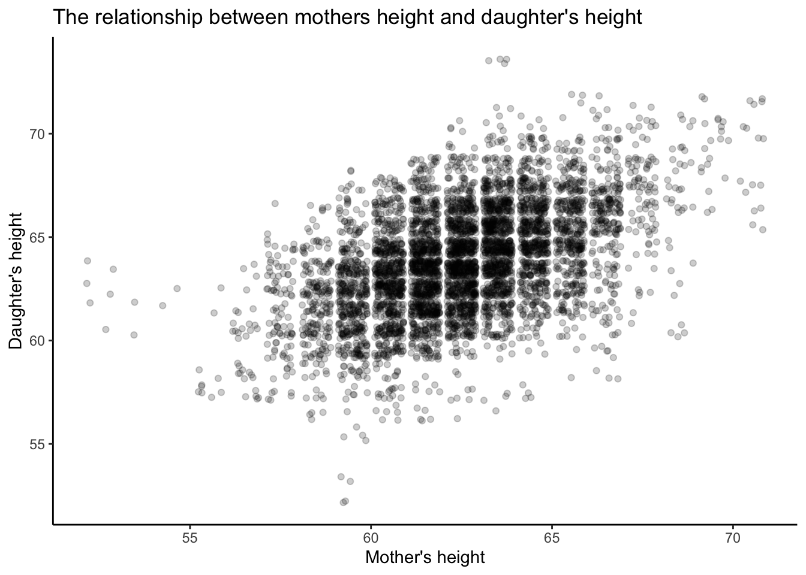
Is there a linear predictive relationship between these two parameters? In regression we examine the line of best fit.
# regression
m1 <-
lm(daughter_height ~ mother_height, data = df_pearson_lee_centered)
# graph
sjPlot::tab_model(m1)| daughter height | |||
| Predictors | Estimates | CI | p |
| (Intercept) | 29.80 | 28.25 – 31.35 | <0.001 |
| mother height | 0.54 | 0.52 – 0.57 | <0.001 |
| Observations | 5524 | ||
| R2 / R2 adjusted | 0.252 / 0.252 | ||
We can plot the coefficient, but in a model with one predictor, this isn’t very informative. However, as we continue in the course, we’ll see that plotting coefficients can be easier than deciphering the numbers in tables. Here are two methods for plotting.
# get model parameters
t_m1<-parameters::model_parameters(m1,
ci = 0.95)
# plot
plot(t_m1) +
labs(title = "The relationship between mothers height and daughter's height") +
ylab("Daughter's height") 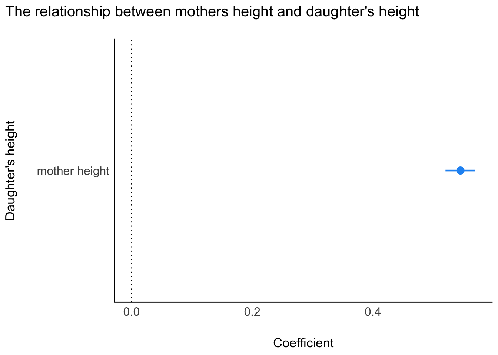
How do we interpret the regression model?
Let’s write the equation out in mathematics. How do we read this? [^2] [^2]: Later, we’ll prefer a different way of writing regression equations in math. (Note: writing math isn’t math - it’s just encoding the model that we’ve written).
library("equatiomatic")
# extract equation
#extract_eq(m1, use_coefs = FALSE)\operatorname{daughter\_height} = \alpha + \beta_{1}(\operatorname{mother\_height}) + \epsilon
The math says that the expected daughter’s height in a population is predicted by the average height of the population when mothers’ heights are set to zero units (note, this is impossible - we’ll come back to this) plus \beta ~\times units of daughter’s height (inches) for each additional unit of mother’s height (inches)
We can plug the output of the model directly into the equation as follows:
# extract equation
#extract_eq(m1, use_coefs = TRUE)\operatorname{\widehat{daughter\_height}} = 29.8 + 0.54(\operatorname{mother\_height})
Graph the relationship between mother’s and daughter’s heights
library(ggeffects)
predictions <- ggeffects::ggpredict(m1, terms = "mother_height",
add.data = TRUE,
dot.alpha = .1,
jitter = TRUE)
plot_predictions <-
plot(predictions) + theme_classic() + labs(title = "Predicted values of daughter's height from the Pearson/Fox 1903 dataset")
plot_predictions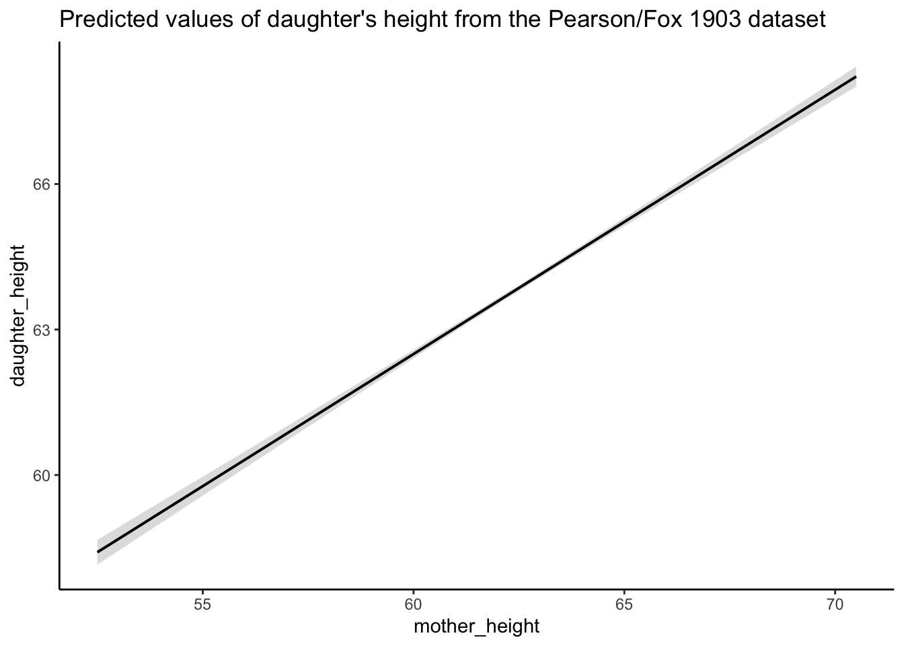
Regression to predict beyond the range of a dataset
Joyte Amge is the world’s shortest woman at 25 inches. Sandy Allen was the world’s tallest woman at 91 inches. What are the expected heights of their daughter and of every intermediary woman in between?
# use the `expand.grid` command to create a sequence of points for mother's height
df_expand_grid <- expand.grid(mother_height = c(25:91))
# use the `predict` function to create a new response
df_predict <-
predict(m1,
type = "response",
interval = "confidence",
newdata = df_expand_grid)
# have a look at the object
#dplyr::glimpse(df_predict)
# create a new dataframe for the new sequence of points for mother's height and the predicted data
newdata <- data.frame(df_expand_grid, df_predict)
head(newdata) mother_height fit lwr upr
1 25 43.42183 42.49099 44.35266
2 26 43.96676 43.06065 44.87288
3 27 44.51170 43.63030 45.39310
4 28 45.05664 44.19995 45.91332
5 29 45.60157 44.76960 46.43355
6 30 46.14651 45.33924 46.95378Graph the predicted results
# graph the expected results
predplot <- ggplot(data = newdata,
aes(x = mother_height, y = fit)) +
geom_point() + geom_errorbar(aes(ymin = lwr, ymax = upr), width = .1) +
expand_limits(x = c(20, 91), y = c(0, 81)) + theme_classic() +
labs(title = "Predicted values for a broader population")
# plot the two graphs together (making the x and y axis at the same scale
library("patchwork")
# rescale heightplot
# old plot with the new axis and y-axis scales, and remove points
plot_height <- plot(predplot, add.data = FALSE) + theme_classic()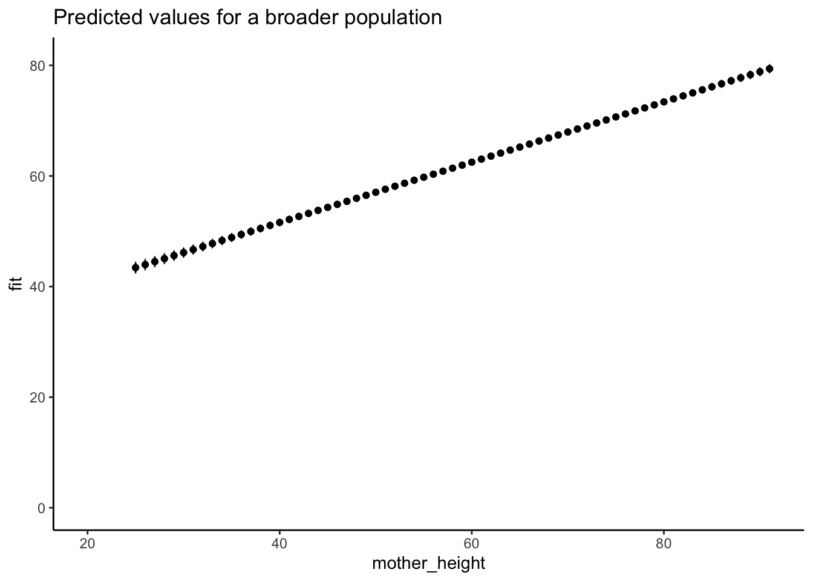
plot_height_title <-
plot_height + expand_limits(x = c(20, 91), y = c(0, 81)) + labs(title = "Predicted values of daughter's height from the Pearson/Fox 1903 dataset")
# double graph
plot_height_title / predplot + plot_annotation(title = "What do you notice about these relationships?", tag_levels = "a")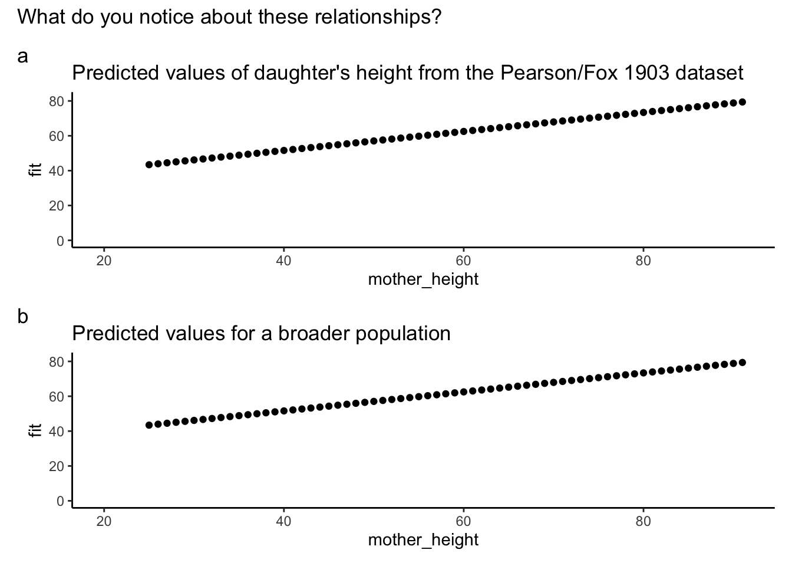
A simple method for obtaining the predicted values from your fitted model is to obtain the effects output without producing a graph.
# prediction plots
library(ggeffects)
# predicted values of mother height on daughter height
ggeffects::ggpredict(m1, terms = "mother_height")# Predicted values of daughter_height
mother_height | Predicted | 95% CI
----------------------------------------
52.50 | 58.41 | 58.15, 58.66
54.50 | 59.50 | 59.29, 59.70
57.50 | 61.13 | 60.99, 61.27
59.50 | 62.22 | 62.13, 62.32
61.50 | 63.31 | 63.25, 63.38
63.50 | 64.40 | 64.34, 64.47
65.50 | 65.49 | 65.40, 65.59
70.50 | 68.22 | 68.01, 68.42Non-linear relationships
Linear regression assumes linearity conditional on a model. Often your data will not be linear!
Consider the following example:
# simulate nonlinear relationship between x and y
b <- c(2, 0.75)
set.seed(12)
x <- rnorm(100)
set.seed(12)
y <- rnorm(100, mean = b[1] * exp(b[2] * x))
dat1 <- data.frame(x, y)
ot1 <- lm(y ~ x, data = dat1)
# performance::check_model(ot1)
# plot linear effect
plot(ggeffects::ggpredict(ot1, terms = "x",
add.data = TRUE,
dot.alpha = .4))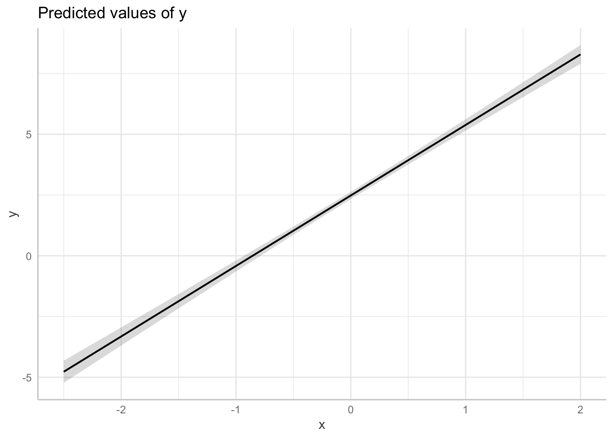
Non-linear relationship as modelled by a polynomial regression:
# model: quadratic
fit_non_linear <- lm(y ~ x + I(x ^ 2), data = dat1)
# predictive plot
plot(ggeffects::ggpredict(fit_non_linear, terms = "x",
add.data = TRUE,
dot.alpha = .4))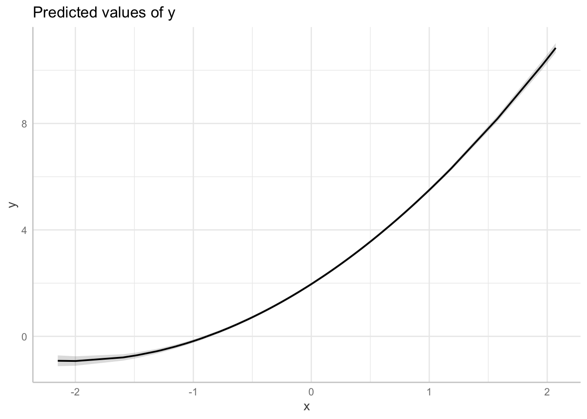
Here is another approach:
# non-linear regression
library(splines)
# fit model
fit_non_linear_b <- lm(y ~ x + poly(x, 2), data = dat1)
# graph model
plot(
ggeffects::ggpredict(fit_non_linear_b, terms = "x",
add.data = TRUE,
dot.alpha = .4
))Non-linear relationship as modelled by a general additive model (spline)
# fit spline: not specified
fit_non_linear_c <-lm(y ~ bs(x), data = dat1)
# model parameters: coefficients are not interpretable
parameters::model_parameters(
fit_non_linear_c
)Parameter | Coefficient | SE | 95% CI | t(96) | p
----------------------------------------------------------------------
(Intercept) | -1.90 | 0.03 | [-1.95, -1.84] | -70.74 | < .001
x [1st degree] | 2.60 | 0.06 | [ 2.48, 2.72] | 43.47 | < .001
x [2nd degree] | 3.00 | 0.03 | [ 2.94, 3.06] | 96.12 | < .001
x [3rd degree] | 13.33 | 0.04 | [13.26, 13.40] | 368.37 | < .001#performance::check_model(ot2)
plot(
ggeffects::ggpredict(fit_non_linear_c, terms = "x",
add.data = TRUE,
dot.alpha = .4
))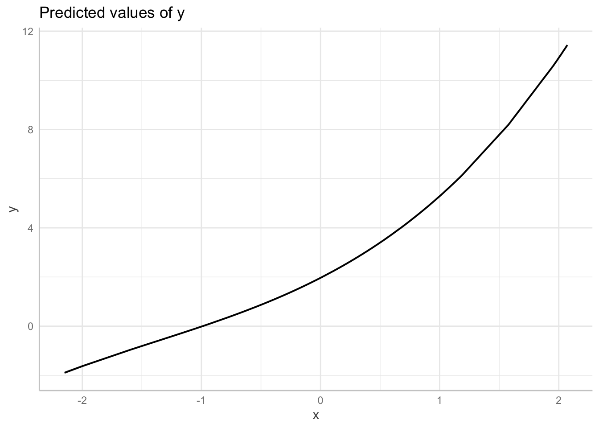
Centering
Any linear transformation of a predictor is OK. Often we centre (or centre and scale) all indicators, which gives us an interpretable intercept (the expected population average when the other indicators are set their average).
library(ggeffects)
# fit raw data
fit_raw <- lm(daughter_height ~ mother_height, data = df_pearson_lee_centered)
# fit centred data
fit_centered <-
lm(daughter_height ~ mother_height_c, data = df_pearson_lee_centered)
# compare the models
sjPlot::tab_model(fit_raw, fit_centered)| daughter height | daughter height | |||||
| Predictors | Estimates | CI | p | Estimates | CI | p |
| (Intercept) | 29.80 | 28.25 – 31.35 | <0.001 | 63.86 | 63.80 – 63.92 | <0.001 |
| mother height | 0.54 | 0.52 – 0.57 | <0.001 | |||
| mother height c | 0.54 | 0.52 – 0.57 | <0.001 | |||
| Observations | 5524 | 5524 | ||||
| R2 / R2 adjusted | 0.252 / 0.252 | 0.252 / 0.252 | ||||
Graph model
# graph centred model
plot(
ggeffects::ggpredict(fit_centered, terms = "mother_height_c",
add.data = TRUE,
dot.alpha = .4
))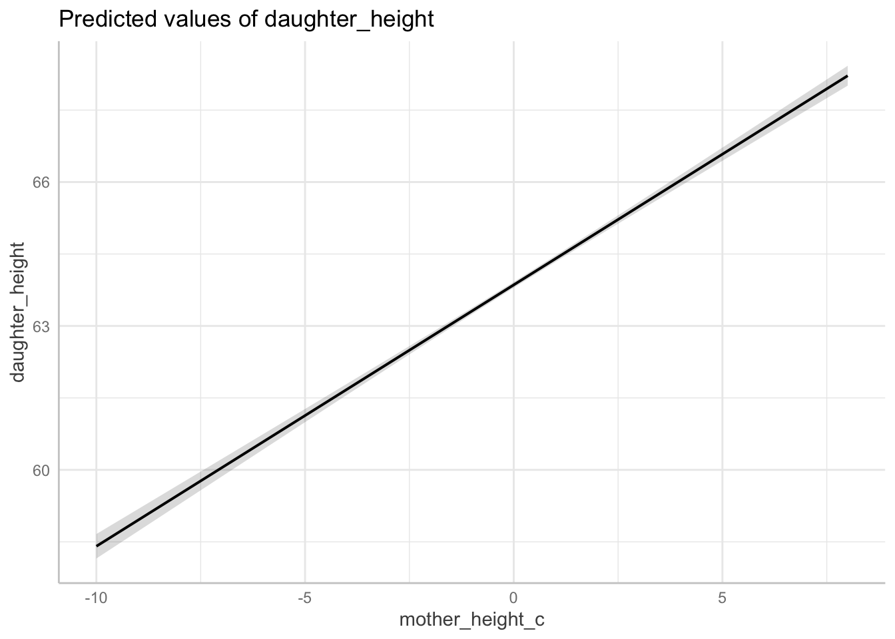
Note: when fitting a polynomial or any interaction, it is important to center your indicators. We’ll come back to this point in later lectures.
Model evaluation
Reviewers will sometime ask you to assess model fit.
A simple, but flawed way to assess accuracy of your model fit is to compare a model with one covariate with a simple intercept-only model and to assess improvement in either the AIC statistic or the BIC statistic. The BIC is similar to the AIC but adds a penalty for extra predictors. An absolute improvement in either statistic of n > 10 is considered to be a “better” model.
We can use the performance package to generate a table that compares model fits.
# load library
library(performance)
# intercept only
fig_intercept_only <- lm(daughter_height ~ 1, data = df_pearson_lee)
# covariate added
fig_covariate <- lm(daughter_height ~ mother_height, data = df_pearson_lee)
# evaluate
performance::compare_performance(fig_intercept_only, fig_covariate)# Comparison of Model Performance Indices
Name | Model | AIC (weights) | AICc (weights)
--------------------------------------------------------------
fig_intercept_only | lm | 26300.0 (<.001) | 26300.0 (<.001)
fig_covariate | lm | 24698.5 (>.999) | 24698.5 (>.999)
Name | BIC (weights) | R2 | R2 (adj.) | RMSE | Sigma
------------------------------------------------------------------------
fig_intercept_only | 26313.2 (<.001) | 0.000 | 0.000 | 2.615 | 2.615
fig_covariate | 24718.4 (>.999) | 0.252 | 0.252 | 2.262 | 2.262What was the model “improvement?”
# improved fit
BIC(fig_intercept_only) - BIC(fig_covariate)[1] 1594.839Generate a report
This is easy with the report package
For example:
report::report_statistics(fig_covariate)beta = 29.80, 95% CI [28.25, 31.35], t(5522) = 37.70, p < .001; Std. beta = 7.21e-15, 95% CI [-0.02, 0.02]
beta = 0.54, 95% CI [0.52, 0.57], t(5522) = 43.12, p < .001; Std. beta = 0.50, 95% CI [0.48, 0.52]Or, if you want a longer report:
report::report(fig_covariate)Use statistically significant in place of significant. This will avoid misleading your audience into thinking your result is important when what you intend to communicate is that it is reliable.
Assumptions of Regression
From Gelman and Hill (Gelman and Hill 2006)
Validity
The most important is that the data you are analyzing should map to the research question you are trying to answer (Gelman, Hill, and Vehtari 2020, 152)
Representativeness
A regression model is fit to data and is used to make inferences about a larger population, hence the implicit assumption in interpreting regression coefficients is that the sample is representative of the population. (Gelman, Hill, and Vehtari 2020, 153)
Linearity
The most important mathematical assumption of the linear regression model is that its deterministic component is a linear function of the separate predictors: y = β0 + β1x1 + β2x2 +···. If additivity is violated, it might make sense to transform the data (for example, if y = abc, then log y = log a + log b + log c) or to add interactions. If linearity is violated, perhaps a predictor should be put in as 1/x or log(x) instead of simply linearly. Or a more complicated relationship could be expressed using a nonlinear function such as a spline or Gaussian process, (Gelman, Hill, and Vehtari 2020, 153)
Independence of errors
The simple regression model assumes that the errors from the prediction line are independent, an assumption that is violated in time series, spatial, and multilevel settings (Gelman, Hill, and Vehtari 2020, 153)
Equal variance of errors
…unequal variance does not affect the most important aspect of a regression model, which is the form of the predictors (Gelman, Hill, and Vehtari 2020, 153)
- Normality of errors (statistical independence)
The regression assumption that is generally least important is that the errors are normally distributed. In fact, for the purpose of estimating the regression line (as compared to predicting individual data points), the assumption of normality is barely important at all. Thus, in contrast to many regression textbooks, we do not recommend diagnostics of the normality of re-gression residuals. (Gelman and Hill 2006, 46)
A good way to diagnose violations of some of the assumptions just considered (importantly, linearity) is to plot the residuals versus fitted values or simply individual predictors.(Gelman and Hill 2006, 46)
Gelman, Andrew, and Jennifer Hill. 2006. Data Analysis Using Regression and Multilevel/Hierarchical Models. Cambridge university press.
Common Confusions
Regressions do not automatically give us “effects”
People use the work “effect”, but that is not what regression gives us, by default.
“Normality Assumption”
Gelman and Hill note that the “normality” assumption is the least important. The assumption pertains to the normality of residuals.
Statistical Independence
This is the motivation for doing multi-level modelling: to condition on dependencies in the data. However, multi-level modelling can produce new problems if the error terms in the model are not independent of the outcome.
External Validity (wrong population)
We sample from undergraduates, but infer about the human population.
Important
NOTE: The concept of “better model fit” is relative to our interests and purposes. A better (lower) AIC statistic does not tell us whether a model is better for better causal inference. We must assess whether a model satisfies the assumptions necessary for valid causal inference.
Simulation Demonstration 1: How Regression Coefficients Mislead
Methodology
Data Generation: we simulate a dataset for 1,000 individuals, where religious service attendance (A) affects wealth (L), which in turn affects charitable donations (Y). The simulation is based on predefined parameters that establish L as a mediator between A and Y.
Parameter Definitions:
- The probability of religious service (A) is set at 0.5.
- The effect of A on L (wealth) is given by \beta = 2.
- The effect of L on Y (charity) is given by \delta = 1.5.
- Standard deviations for L and Y are set at 1 and 1.5, respectively.
Model Specifications:
- Model 1 (Correct Assumption): considerss a linear regression model assuming L as a mediator, including A and L as regressors on Y. This model aligns with the data-generating process and correctly identifies L as a mediator. According to the rules of d-separation (last week): to identify the total effect of A on Y we must not include L
- Model 2 (Correct model): This fits a linear regression model that includes only A as a regressor on Y and omits the mediator L. This model assesses the direct effect of A on Y without accounting for mediation.
Analysis and Comparison: the analysis compares the estimated effects of A on Y under both model specifications. By including L as a predictor in Model 1, we induce mediation bias. Whereas Model 2 correctly excludes L from the model.
Presentation: the results are displayed in a comparative table formatted for publication. The table contrasts the regression coefficients and significance levels obtained under each model.
# simulation seed
set.seed(123) # reproducibility
# define the parameters
n = 1000 # Number of observations
p = 0.5 # Probability of A = 1
alpha = 0 # Intercept for L
beta = 2 # Effect of A on L
gamma = 1 # Intercept for Y
delta = 1.5 # Effect of L on Y
sigma_L = 1 # Standard deviation of L
sigma_Y = 1.5 # Standard deviation of Y
# simulate the data: fully mediated effect by L
A = rbinom(n, 1, p) # binary exposure variable
L = alpha + beta*A + rnorm(n, 0, sigma_L) # mediator L affect by A
Y = gamma + delta*L + rnorm(n, 0, sigma_Y) # Y affected only by L,
# make the data frame
data = data.frame(A = A, L = L, Y = Y)
# fit regression in which L is assumed to be a mediator
# (cross-sectional data is consistent with this model)
example_fit_1 <- lm( Y ~ A + L, data = data)
# fit regression in which L is assumed to be a mediator
# (cross-sectional data is also consistent with this model)
example_fit_2 <- lm( Y ~ A, data = data)
# create gtsummary tables for each regression model
table1 <- gtsummary::tbl_regression(example_fit_1)
table2 <- gtsummary::tbl_regression(example_fit_2)
# merge the tables for comparison
table_comparison <- gtsummary::tbl_merge(
list(table1, table2),
tab_spanner = c("Model: Wealth assumed confounder",
"Model: Wealth assumed to be a mediator")
)
# make latex table (for publication)
markdown_table_0 <- as_kable_extra(table_comparison,
format = "markdown",
booktabs = TRUE)
# print markdown table (note, you might prefer "latex" or another format)
markdown_table_0| Characteristic | Beta | 95% CI | p-value | Beta | 95% CI | p-value |
|---|---|---|---|---|---|---|
| A | -0.27 | -0.53, -0.01 | 0.043 | 2.9 | 2.6, 3.2 | <0.001 |
| L | 1.6 | 1.5, 1.7 | <0.001 | |||
| Abbreviation: CI = Confidence Interval |
Code for a simulation of a data generating process in which the effect of exercise (L) fully mediates the effect of greenspace (A) on happiness (Y).
Compare model fits
By all metrics, model 1 fits better but it is confounded
performance::compare_performance(example_fit_1, example_fit_2)# Comparison of Model Performance Indices
Name | Model | AIC (weights) | AICc (weights) | BIC (weights)
------------------------------------------------------------------------
example_fit_1 | lm | 3620.6 (>.999) | 3620.6 (>.999) | 3640.2 (>.999)
example_fit_2 | lm | 4392.2 (<.001) | 4392.2 (<.001) | 4406.9 (<.001)
Name | R2 | R2 (adj.) | RMSE | Sigma
-------------------------------------------------
example_fit_1 | 0.682 | 0.682 | 1.473 | 1.475
example_fit_2 | 0.312 | 0.311 | 2.169 | 2.171Model 1 exhibits mediator bias, but it has a considerably higher R^2, and a lower BIC
Focussing on the BIC (lower is better) Model 1 fits better, but it is confounded.
BIC(example_fit_1) - BIC(example_fit_2)[1] -766.643
Important
In this simulation, we discovered that if we assess “effect” by “model fit” we will get the wrong sign for the coefficient of interest. The use of model fit perpetuates the causality crisis in psychological science (Joseph A. Bulbulia 2023). Few are presently aware of this crisis. Causal diagrams show us how we can do better.
Simulation Demonstration 2: How Regression Coefficients Mislead
Methodology
Data Generation: simulate a dataset for 1,000 individuals, where religious service attendance (A) affects wealth (L),and chartitable donations charitable donations (Y) also affects wealth L, but A and Y are not causally related
Parameter Definitions:
- The probability of religious service (A) is set at 0.5.
- Y is has a mean 0 and sd = 1, and is independent of A.
- L is a linear function of A and Y.
Model Specifications:
- Model 1 (Correct Assumption): do not control for L
- Model 2 (Correct model): control for L
Analysis and Comparison: compare models.
Presentation: a table.
# simulation seed
set.seed(123) # reproducibility
# define parameters
n = 1000 # Number of observations
p = 0.5 # Probability of A = 1
alpha = 0 # Intercept for L
# simulate the data
A_1 = rbinom(n, 1, p) # binary exposure variable
Y_1 = rnorm(n, 0, 1) # Y affected only by L,
L_2 = rnorm(n, A_1 + Y_1)
# make the data frame
data_collider = data.frame(A = A_1, L = L_2, Y = Y_1)
# fit regression in which L is assumed to be a mediator
# (cross-sectional data is consistent with this model)
collider_example_fit_1 <- lm( Y ~ A + L, data = data_collider)
# fit regression in which L is assumed to be a mediator
# (cross-sectional data is also consistent with this model)
collider_example_fit_2 <- lm( Y ~ A, data = data_collider)
summary(collider_example_fit_1)
Call:
lm(formula = Y ~ A + L, data = data_collider)
Residuals:
Min 1Q Median 3Q Max
-2.16111 -0.46220 -0.00342 0.45893 1.98913
Coefficients:
Estimate Std. Error t value Pr(>|t|)
(Intercept) -0.008157 0.030247 -0.27 0.787
A -0.476938 0.045314 -10.53 <2e-16 ***
L 0.508127 0.014894 34.12 <2e-16 ***
---
Signif. codes: 0 '***' 0.001 '**' 0.01 '*' 0.05 '.' 0.1 ' ' 1
Residual standard error: 0.681 on 997 degrees of freedom
Multiple R-squared: 0.5386, Adjusted R-squared: 0.5377
F-statistic: 582 on 2 and 997 DF, p-value: < 2.2e-16# create gtsummary tables for each regression model
collider_table1 <- gtsummary::tbl_regression(collider_example_fit_1)
collider_table2 <- gtsummary::tbl_regression(collider_example_fit_2)
# merge the tables for comparison
collider_table_comparison <- gtsummary::tbl_merge(
list(collider_table1, collider_table2),
tab_spanner = c("Model: Wealth assumed confounder",
"Model: Wealth not assumed to be a mediator")
)
# make latex table (for publication)
markdown_table_1 <- as_kable_extra(collider_table_comparison,
format = "markdown",
booktabs = TRUE)
# print markdown table (note, you might prefer "latex" or another format)
collider_table_comparison| Characteristic |
Model: Wealth assumed confounder
|
Model: Wealth not assumed to be a mediator
|
||||
|---|---|---|---|---|---|---|
| Beta | 95% CI | p-value | Beta | 95% CI | p-value | |
| A | -0.48 | -0.57, -0.39 | <0.001 | 0.00 | -0.12, 0.13 | >0.9 |
| L | 0.51 | 0.48, 0.54 | <0.001 | |||
| Abbreviation: CI = Confidence Interval | ||||||
L is a collider of A and Y.
Compare model fits
By all metrics, model 1 fits better but it is confounded.
A is not causally associated with Y. We generated the data so we know. However, the confounded model shows a better fit, and in this model the coefficient for A is significant (and negative).
performance::compare_performance(collider_example_fit_1, collider_example_fit_2)# Comparison of Model Performance Indices
Name | Model | AIC (weights) | AICc (weights)
----------------------------------------------------------------
collider_example_fit_1 | lm | 2074.4 (>.999) | 2074.4 (>.999)
collider_example_fit_2 | lm | 2845.9 (<.001) | 2845.9 (<.001)
Name | BIC (weights) | R2 | R2 (adj.) | RMSE | Sigma
--------------------------------------------------------------------------------
collider_example_fit_1 | 2094.0 (>.999) | 0.539 | 0.538 | 0.680 | 0.681
collider_example_fit_2 | 2860.6 (<.001) | 2.784e-06 | -9.992e-04 | 1.001 | 1.002Again, the BIC for (lower is better) Model 1 fits better, but it is entirely confounded.
BIC(collider_example_fit_1) - BIC(collider_example_fit_2)[1] -766.643How does collider bias work? If we know that someone is not attending church, if they are charitable then we can predict they are wealthy. Similarly if we know someone is not wealthy but charitable, we can predict they attend religious service.
However, in this simulation, we know the religion and wealth are not casually associated because we have simulated the data.
Important
In this simulation, we discovered that if we assess “effect” by “model fit”, we get the **wrong scientific inference. The use of model fit perpetuates the causality crisis* in psychological science (Joseph A. Bulbulia 2023). Let’s do better.
Bulbulia, Joseph A. 2023. “A Workflow for Causal Inference in Cross-Cultural Psychology.” Religion, Brain & Behavior 13 (3): 291–306. https://doi.org/10.1080/2153599X.2022.2070245.
Resources on Regression that Do Not Perpetuate The Causality Crisis
- Statistical Rethinking (McElreath 2020)
- Regression and Other Stories (Gelman, Hill, and Vehtari 2020)
McElreath, Richard. 2020. Statistical Rethinking: A Bayesian Course with Examples in R and Stan. CRC press.
Gelman, Andrew, Jennifer Hill, and Aki Vehtari. 2020. Regression and Other Stories. Cambridge University Press.
Setup
Libraries
library(tidyverse)
library(patchwork)
library(lubridate)
library(kableExtra)
library(gtsummary)Get data
# package with data
library(margot)
# load data
data("df_nz")Import Pearson and Lee mother’s and daughters data
df_pearson_lee <-
data.frame(read.table(
url(
"https://raw.githubusercontent.com/avehtari/ROS-Examples/master/PearsonLee/data/MotherDaughterHeights.txt"
),
header = TRUE
))
# Center mother's height for later example
df_pearson_lee <- df_pearson_lee|>
dplyr::mutate(mother_height_c = as.numeric(scale(
mother_height, center = TRUE, scale = FALSE
)))
# dplyr::glimpse(df_pearson_lee)
# In 1903, Pearson and Lee collected 5,524 observations from mother/daughter height pairs. See lecture 5 for detailsNote
For all exercises below, use only the 2018 wave of the df_nz dataset.
colnames(df_nz) ## Q1. Create a descriptive table and a descriptive graph for the hlth_weight and hlth_height variables in the df_nz dataset
Select hlth_height, hlth_weight from the nz dataset.
Filter only the 2018 wave.
Create a descriptive table and graph these two variables
Annotate your workflow (at each step, describe what you are doing and why).
Q2. Regression height ~ weight and report results
Using the df_nz dataset, write a regression model for height as predicted by weight.
Create a table for your results.
Create a graphs/graphs to clarify the results of your regression model.
Briefly report your results.
Q3. Regress height ~ male and report results
Using the df_nz dataset, write a regression model for height as predicted by male
Create a table for your results.
Create a graphs/graphs to clarify the results of your regression model.
Briefly report your results.
Q4. Regression to predict
Using the regression coefficients from the Pearson and Lee 1903 dataset, predict the heights of daughters of women in the df_nz dataset.
Q5. Bonus
On average, how much taller or shorter are women in New Zealand as sampled in 2019 df_nz dataset compared with women in 1903 as sampled in the Pearson and Lee dataset.
Clarify your inference.
Solutions: Set Up
### libraries
library("tidyverse")
library("patchwork")
library("lubridate")
library("kableExtra")
library("gtsummary")# get data
library("margot")
data("df_nz")# Import `Pearson and Lee` mother's and daughters data
# In 1903, Pearson and Lee collected 5,524 observations from mother/daughter height pairs.
df_pearson_lee <- data.frame(read.table(
url(
"https://raw.githubusercontent.com/avehtari/ROS-Examples/master/PearsonLee/data/MotherDaughterHeights.txt"
),
header = TRUE
))
# Center mother's height for later example
df_pearson_lee <- df_pearson_lee|>
dplyr::mutate(mother_height_c = as.numeric(scale(
mother_height, center = TRUE, scale = FALSE
)))
# dplyr::glimpse(df_pearson_lee)Solution Q1 descriptive table
# required libraries
library(gtsummary)
library(dplyr)
library(margot)
# select focal variables and rename them for clarity
df_nzdat <- df_nz |>
dplyr::filter(wave == 2019) |>
dplyr::select(hlth_weight, hlth_height, male) |>
dplyr::rename(weight = hlth_weight,
height = hlth_height) |>
dplyr::select(weight, height, male) |>
dplyr::mutate(weight_c = as.numeric(scale(
weight, scale = F, center = TRUE
)))
# create table
df_nzdat |>
dplyr::select(weight,
height) |>
gtsummary::tbl_summary(
#by = wave,
statistic = list(
all_continuous() ~ "{mean} ({sd})",
all_categorical() ~ "{n} / {N} ({p}%)"
),
digits = all_continuous() ~ 2,
missing_text = "(Missing)"
)|>
bold_labels() | Characteristic | N = 20,0001 |
|---|---|
| weight | 79.24 (18.42) |
| (Missing) | 5,655 |
| height | 1.70 (0.10) |
| (Missing) | 5,655 |
| 1 Mean (SD) | |
Here’s another approach:
# libs we need
library(table1)
library(tidyverse)
library(tidyr)
library(margot)
# filter 2019 wave
df_nz_1 <- df_nz|>
dplyr::filter(wave == 2019)
# nicer labels
table1::label(df_nz_1$hlth_weight) <- "Weight"
table1::label(df_nz_1$hlth_height) <- "Height"
# table
table1::table1(~ hlth_weight + hlth_height, data = df_nz_1) | Overall (N=20000) |
|
|---|---|
| Weight | |
| Mean (SD) | 79.2 (18.4) |
| Median [Min, Max] | 77.0 [38.0, 200] |
| Missing | 5655 (28.3%) |
| Height | |
| Mean (SD) | 1.70 (0.100) |
| Median [Min, Max] | 1.69 [1.26, 2.04] |
| Missing | 5655 (28.3%) |
Create graph
library("patchwork")
# create data set where filtering na vals
df_nzdat1 <- df_nzdat |>
dplyr::filter(!is.na(weight),
!is.na(height),
!is.na(male)) # filter na's for density plots
weight_density <-ggplot2::ggplot(data = df_nzdat1, aes(x = weight)) + geom_density(fill = "chocolate2") +
labs(title = "Density plot of weight of NZ sample years 2019/2020") + theme_classic()
weight_density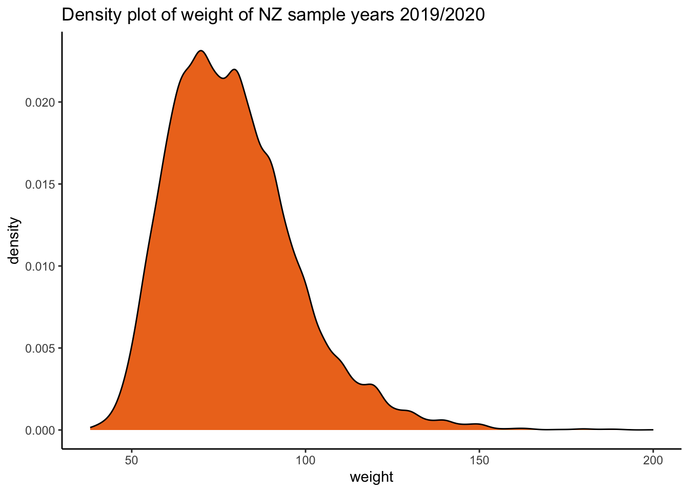
height_density <-ggplot2::ggplot(data = df_nzdat1, aes(x = height)) + geom_density(fill ="blue2") +
labs(title = "Density plot of height of NZ sample years 2019/2020") + theme_classic()
height_density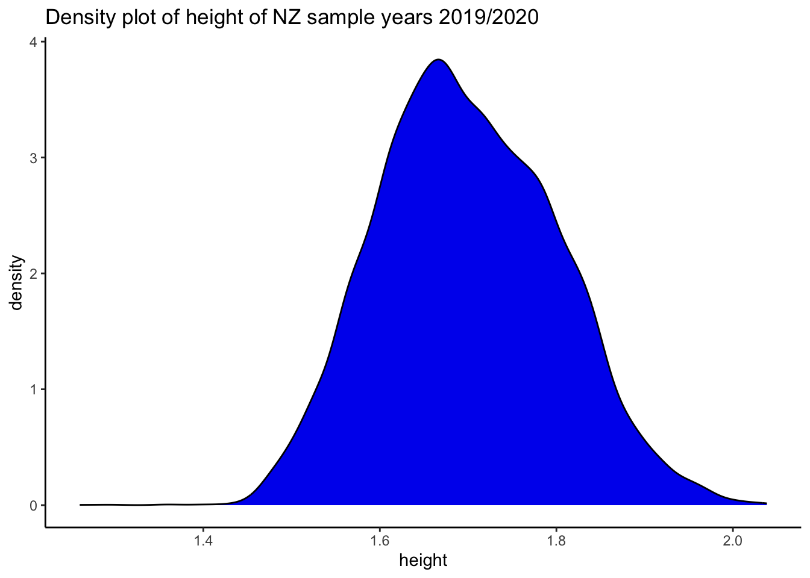
weight_density / height_density + plot_annotation(tag_levels = 'a')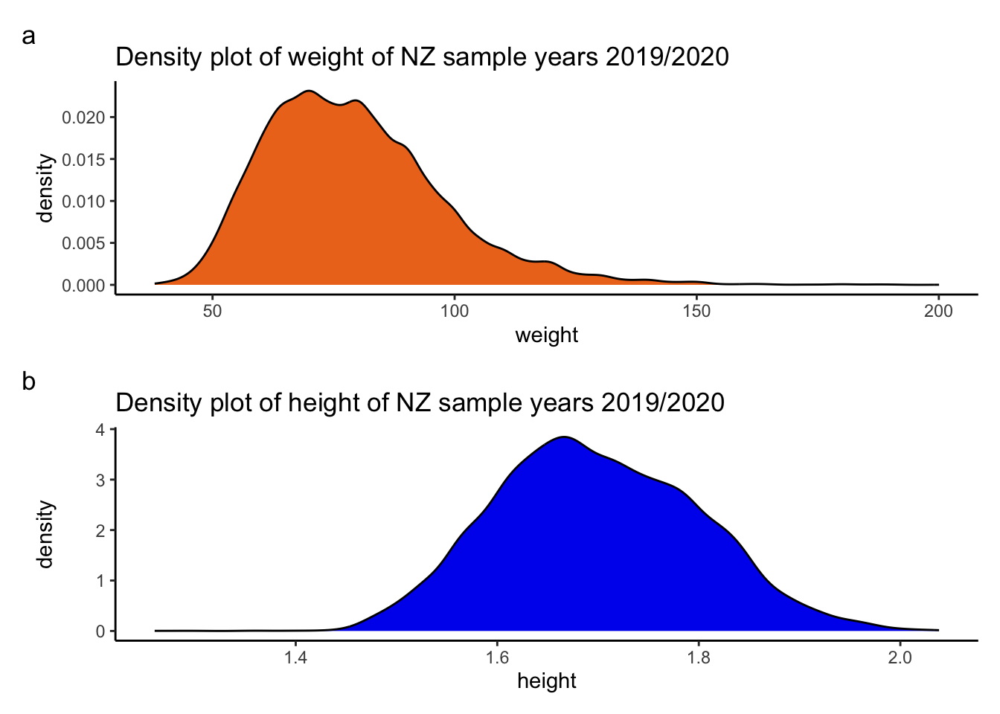
Here’s a density plot:
# library
library(ggplot2)
ggplot2::ggplot(data = df_nzdat1, aes(x = weight, fill = as.factor(male))) +
geom_density() +
labs(title = "Density plot of weight of NZ sample years 2019/2020") +
theme_classic() +
scale_fill_viridis_d() # nicer colour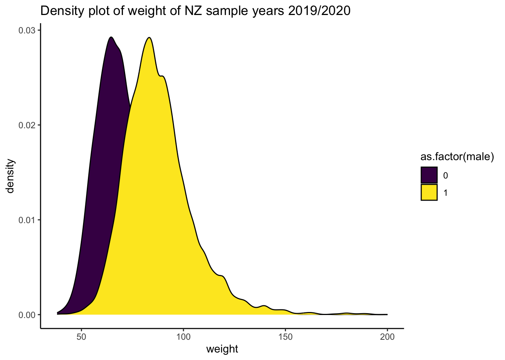
Solution Q2. Regress height ~ weight and report results
Using the nz dataset, write a regression model for height as predicted by weight. Create a table for your results. Create a graphs/graphs to clarify the results of your regression model. Briefly report your results.
Model:
# regression of height ~ weight
fit_1 <- lm(height ~ weight_c, data = df_nzdat)Table:
library(parameters)
#table of model
parameters::model_parameters( fit_1) |>
print_html( digits = 2, # options
select = "{coef}{stars}|({ci})",
column_labels = c("Estimate", "95% CI")
) | Parameter | Estimate | 95% CI |
|---|---|---|
| (Intercept) | 1.70*** | (1.70, 1.70) |
| weight c | 2.23e-03*** | (2.15e-03, 2.31e-03) |
Prediction:
# Ensure necessary libraries are loaded
library(ggeffects)
library(ggplot2)
# generate the plot with adjusted y-scale
plot(ggeffects::ggpredict(fit_1, terms = "weight_c")) 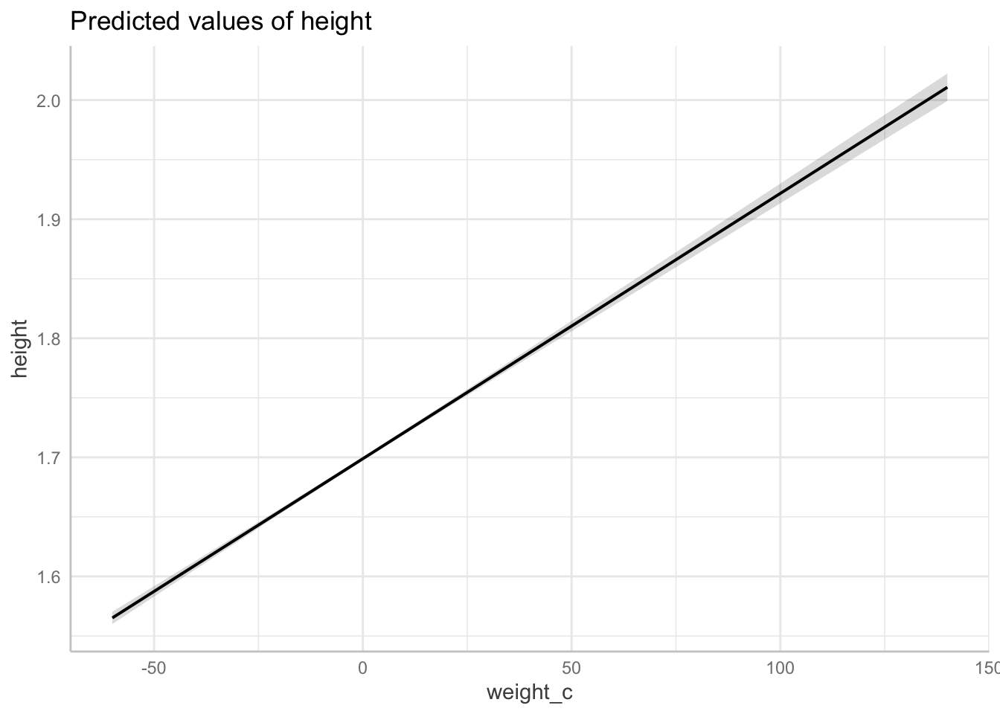
Briefly report your results. (note: please replace “significant” with “statistically significant.)
report::report(fit_1)We fitted a linear model (estimated using OLS) to predict height with weight_c
(formula: height ~ weight_c). The model explains a statistically significant
and moderate proportion of variance (R2 = 0.17, F(1, 14286) = 2858.73, p <
.001, adj. R2 = 0.17). The model's intercept, corresponding to weight_c = 0, is
at 1.70 (95% CI [1.70, 1.70], t(14286) = 2213.51, p < .001). Within this model:
- The effect of weight c is statistically significant and positive (beta =
2.23e-03, 95% CI [2.15e-03, 2.31e-03], t(14286) = 53.47, p < .001; Std. beta =
0.41, 95% CI [0.39, 0.42])
Standardized parameters were obtained by fitting the model on a standardized
version of the dataset. 95% Confidence Intervals (CIs) and p-values were
computed using a Wald t-distribution approximation.Solution Q3. Regress height ~ male and report results
Using the df_nz dataset, write a regression model for height as predicted by male Create a table for your results. Create a graph/graphs to clarify the results of your regression model. Briefly report your results.
Model and table:
# regression of height ~ weight
fit_2 <- lm(hlth_height ~ male, data = df_nz)
sjPlot::tab_model(fit_2)| hlth height | |||
| Predictors | Estimates | CI | p |
| (Intercept) | 1.65 | 1.65 – 1.65 | <0.001 |
| male | 0.13 | 0.13 – 0.13 | <0.001 |
| Observations | 47205 | ||
| R2 / R2 adjusted | 0.388 / 0.388 | ||
Graph:
# plot over the range of the data
plot_fit_2 <- plot(
ggeffects::ggpredict(fit_2, terms = "male[all]",
jitter = .1,
add.data = TRUE,
dot.alpha = .2
) )
# plot
plot_fit_2 +
scale_y_continuous(limits = c(1.2, 2.1))
Report
# report
report::report(fit_2)We fitted a linear model (estimated using OLS) to predict hlth_height with male
(formula: hlth_height ~ male). The model explains a statistically significant
and substantial proportion of variance (R2 = 0.39, F(1, 47203) = 29979.00, p <
.001, adj. R2 = 0.39). The model's intercept, corresponding to male = 0, is at
1.65 (95% CI [1.65, 1.65], t(47203) = 3603.30, p < .001). Within this model:
- The effect of male is statistically significant and positive (beta = 0.13,
95% CI [0.13, 0.13], t(47203) = 173.14, p < .001; Std. beta = 0.62, 95% CI
[0.62, 0.63])
Standardized parameters were obtained by fitting the model on a standardized
version of the dataset. 95% Confidence Intervals (CIs) and p-values were
computed using a Wald t-distribution approximation.Solution Q4. Regression to predict
Using the regression coefficients from the Pearson and Lee 1903 dataset, predict the heights of daughters of women in the nz dataset. ::: {.cell}
# model for daughter height from mother height
fit_3 <- lm(daughter_height ~ mother_height, data = df_pearson_lee)
# create data frame of not_male's in 2019
# notice problem. not_male != woman
# additionally, woman != mother!
df_nz_2 <- df_nz|>
filter(male == 1)|> # not_males
dplyr::select(hlth_height)|> # variable of interest
dplyr::mutate(mother_height = hlth_height * 39.36)|> # Convert meters to inches
dplyr::select(mother_height)|>
dplyr::arrange((mother_height))
# find min and max heights, store as objects
min_mother_height <- min(df_nz_2$mother_height, na.rm = TRUE)
max_mother_height <- max(df_nz_2$mother_height, na.rm = TRUE)
# expand grid, use stored objects to define boundaries.
df_expand_grid_nz_2 <-
expand.grid(mother_height = seq(
from = min_mother_height,
to = max_mother_height,
length.out = 200
))
# use the `predict` function to create a new response using the pearson and fox regression model
predict_fit_3 <-
predict(fit_3,
type = "response",
interval = "confidence",
newdata = df_expand_grid_nz_2)
# create a new dataframe for the response variables, following the method in lecture 5
# combine variables into a data frame
df_expand_grid_nz_2_predict_fit_3 <-
data.frame(df_expand_grid_nz_2, predict_fit_3)
# graph the expected average hypothetical heights of "daughters"
predplot2 <-
ggplot(data = df_expand_grid_nz_2_predict_fit_3,
aes(x = mother_height,
y = fit)) +
geom_line(colour = "cadetblue") + geom_errorbar(aes(ymin = lwr, ymax = upr), width = .1) + scale_x_continuous(limits = c(50, 75)) + scale_y_continuous(limits = c(50, 75)) + theme_classic() +
xlab("NZ 2019 female population") +
ylab("predicted daughter heights in inches") +
labs(title = "Regression prediction for hypothetical daughter heights of NZ population in 2019 ")
# plot
predplot2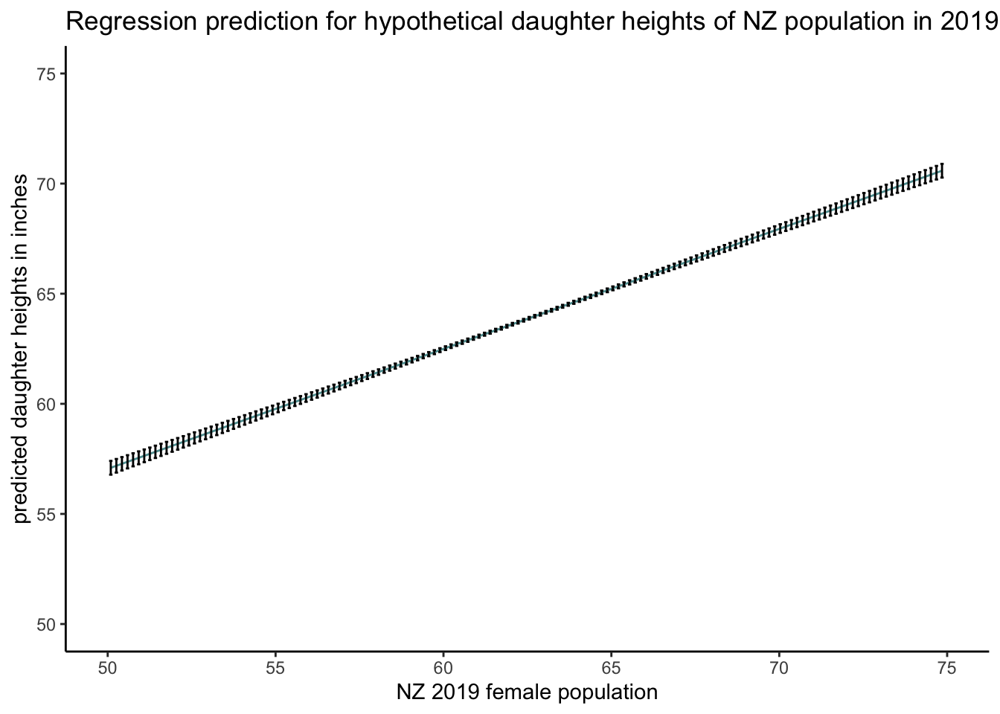
:::
Solution Q6. Bonus
On average, how much taller or shorter are women in New Zealand as sampled in 2019 nz dataset compared with women in 1903 as sampled in the Pearson and Lee dataset.
# create var for 1903 dataset
# For the historical dataset (assuming year 1903 for df_pearson_lee_2)
df_pearson_lee_2 <- df_pearson_lee |>
dplyr::select(mother_height, daughter_height) |>
tidyr::pivot_longer(everything(), names_to = "relation", values_to = "f_height") |>
dplyr::mutate(year_is = factor("1903"))
# create var the 2019 dataset
df_nz_combine_pearson_lee <- df_nz_2 |>
dplyr::rename(f_height = mother_height) |>
dplyr::mutate(year_is = factor("2019"),
relation = factor("mother"))
# both dataframes have the `year_is` column but with different factor levels
# check
head(df_nz_combine_pearson_lee) f_height year_is relation
1 49.59360 2019 mother
2 51.21146 2019 mother
3 51.45691 2019 mother
4 51.95953 2019 mother
5 52.92635 2019 mother
6 53.22973 2019 mother# combine data frames row-wise
df_nz_combine_pearson_lee_1 <- rbind(df_pearson_lee_2, df_nz_combine_pearson_lee)
# look at data structure
#dplyr::glimpse(df_nz_combine_pearson_lee_1)Look at heights in sample
# get min and max heights for graph range
table(df_nz_combine_pearson_lee_1$year_is)
1903 2019
11048 22278 # box plot
ggplot2::ggplot(data =
df_nz_combine_pearson_lee_1,
aes(x = year_is, y = f_height, fill = year_is)) +
geom_boxplot(notch = TRUE) +
labs(title = "Comparison of female height 1903/2019") +
theme_classic() + scale_fill_viridis_d()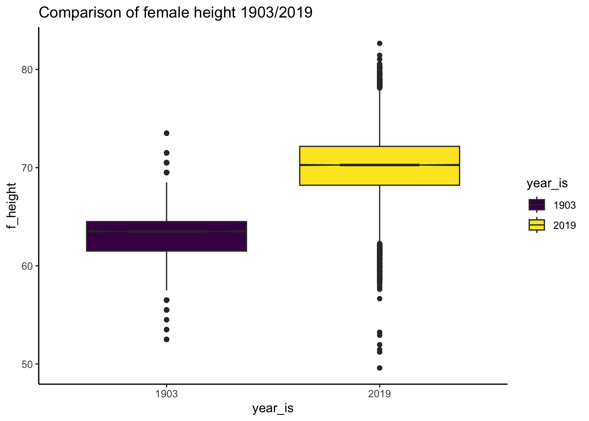
Predict heights out of sample
# regression model
fit_4 <- lm(f_height ~ year_is, data = df_nz_combine_pearson_lee_1)
# table
sjPlot::tab_model(fit_4)| f height | |||
| Predictors | Estimates | CI | p |
| (Intercept) | 63.18 | 63.12 – 63.23 | <0.001 |
| year is [2019] | 6.97 | 6.90 – 7.04 | <0.001 |
| Observations | 28422 | ||
| R2 / R2 adjusted | 0.569 / 0.569 | ||
Women in 2019 are taller
report::report(fit_4)We fitted a linear model (estimated using OLS) to predict f_height with year_is
(formula: f_height ~ year_is). The model explains a statistically significant
and substantial proportion of variance (R2 = 0.57, F(1, 28420) = 37516.23, p <
.001, adj. R2 = 0.57). The model's intercept, corresponding to year_is = 1903,
is at 63.18 (95% CI [63.12, 63.23], t(28420) = 2244.43, p < .001). Within this
model:
- The effect of year is [2019] is statistically significant and positive (beta
= 6.97, 95% CI [6.90, 7.04], t(28420) = 193.69, p < .001; Std. beta = 1.55, 95%
CI [1.53, 1.56])
Standardized parameters were obtained by fitting the model on a standardized
version of the dataset. 95% Confidence Intervals (CIs) and p-values were
computed using a Wald t-distribution approximation.Graph:
# get meaningful values for the y access range
# min
min_mother_height_for_range <- min(df_nz_combine_pearson_lee_1$f_height, na.rm = TRUE)
# max
max_mother_height_for_range <- max(df_nz_combine_pearson_lee_1$f_height, na.rm = TRUE)
# make graph
plot(
ggeffects::ggpredict(fit_4, terms = "year_is",
add.data = TRUE,
dot.alpha = .2
) )+ labs(title = "Predicted difference in female heights 1903/2019") +
xlab("Study year") +
ylab ("Predicted femal height (inches)") + scale_y_continuous(
limits = c(min_mother_height_for_range,max_mother_height_for_range))
Graph with predicted points:
ggeffects::ggpredict(fit_4, terms = "year_is")# Predicted values of f_height
year_is | Predicted | 95% CI
----------------------------------
1903 | 63.18 | 63.12, 63.23
2019 | 70.15 | 70.11, 70.19# graph with predicted values based on the model
plot(
ggeffects::ggpredict(fit_4, terms = "year_is",
add.data = TRUE,
dot.alpha = .01,
colors = "us", # see colour pallet options
jitter =.5)) + labs(title = "Predicted difference in female heights 1903/2019") +
xlab("Study year") +
ylab ("Predicted femal height (inches)") +
scale_y_continuous(limits = c(min_mother_height_for_range, max_mother_height_for_range))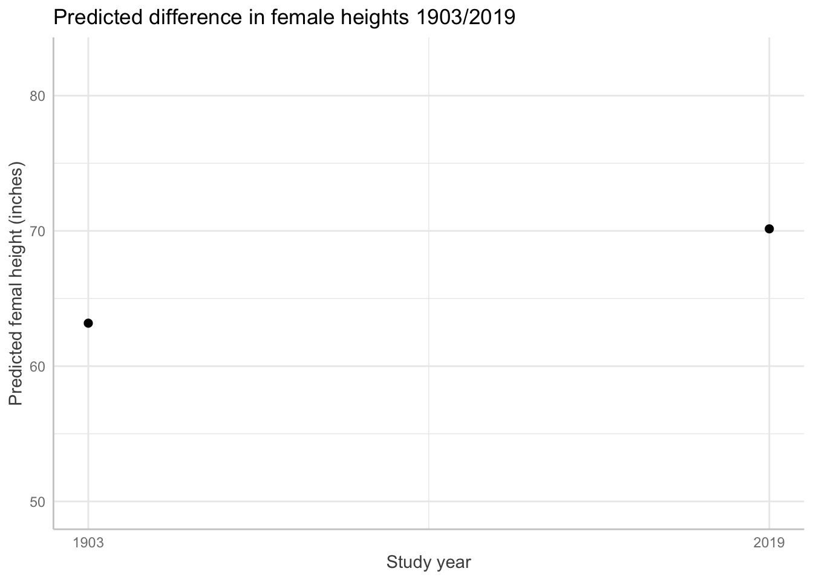
# show all color palettes
#show_pals()Appendix 1 Conceptual Background
Some preliminaries about science.
Science begins with a question
Science begins with a question about the world. The first step in science, then, is to clarify what you want to know.
Because science is a social practice, you will also need to clarify why your question is interesting: so what?
In short, know your question.
Scientific model (or theory)
Sometimes, scientists are interested in specific features of the world: how did virus x originate? Such a question might have a forensic interest: what constellation of events gave rise to a novel infectious disease?
Scientists typically seek generalisations. How do infectious diseases evolve? How do biological organisms evolve? Such questions have applied interests. How can we better prevent infectious diseases? How did life originate?
A scientific model proposes how nature is structured (and unstructured). For example, the theory of evolution by natural selection proposes that life emerges from variation, inheritance, and differential reproduction/survival.
To evaluate a scientific model, scientists must make generalisations beyond individual cases. This is where statistics shines.
What is statistics?
Mathematics is a logic of certainty.
Statistics is a logic of uncertainty.
A statistical model uses the logic of probability to make better guesses.
Applications of statistical models in science
Scientific models seek to explain how nature is structured. Where scientific models conflict, we can combine statistical models with data collection to evaluate the credibility of of one theoretical model over others. To do this, a scientific model must make distinct, non-trivial predictions about the world.
If the predictions are not distinct, the observations will not enable a shift in credibility for one theory over another. Consider the theory that predicts any observation. Such a theory would be better classified as a conspiracy theory; it is compatible with any evidence.
Packages
report::cite_packages() - Anderson D, Heiss A, Sumners J (2024). _equatiomatic: Transform Models into 'LaTeX' Equations_. R package version 0.3.3, <https://CRAN.R-project.org/package=equatiomatic>.
- Bulbulia J (2024). _margot: MARGinal Observational Treatment-effects_. doi:10.5281/zenodo.10907724 <https://doi.org/10.5281/zenodo.10907724>, R package version 0.3.1.6 Functions to obtain MARGinal Observational Treatment-effects from observational data., <https://go-bayes.github.io/margot/>.
- Chang W (2023). _extrafont: Tools for Using Fonts_. R package version 0.19, <https://CRAN.R-project.org/package=extrafont>.
- Grolemund G, Wickham H (2011). "Dates and Times Made Easy with lubridate." _Journal of Statistical Software_, *40*(3), 1-25. <https://www.jstatsoft.org/v40/i03/>.
- Lüdecke D (2018). "ggeffects: Tidy Data Frames of Marginal Effects from Regression Models." _Journal of Open Source Software_, *3*(26), 772. doi:10.21105/joss.00772 <https://doi.org/10.21105/joss.00772>.
- Lüdecke D (2024). _sjPlot: Data Visualization for Statistics in Social Science_. R package version 2.8.17, <https://CRAN.R-project.org/package=sjPlot>.
- Lüdecke D, Ben-Shachar M, Patil I, Makowski D (2020). "Extracting, Computing and Exploring the Parameters of Statistical Models using R." _Journal of Open Source Software_, *5*(53), 2445. doi:10.21105/joss.02445 <https://doi.org/10.21105/joss.02445>.
- Lüdecke D, Ben-Shachar M, Patil I, Waggoner P, Makowski D (2021). "performance: An R Package for Assessment, Comparison and Testing of Statistical Models." _Journal of Open Source Software_, *6*(60), 3139. doi:10.21105/joss.03139 <https://doi.org/10.21105/joss.03139>.
- Makowski D, Lüdecke D, Patil I, Thériault R, Ben-Shachar M, Wiernik B (2023). "Automated Results Reporting as a Practical Tool to Improve Reproducibility and Methodological Best Practices Adoption." _CRAN_. <https://easystats.github.io/report/>.
- Müller K, Wickham H (2023). _tibble: Simple Data Frames_. R package version 3.2.1, <https://CRAN.R-project.org/package=tibble>.
- Pedersen T (2024). _patchwork: The Composer of Plots_. R package version 1.3.0, <https://CRAN.R-project.org/package=patchwork>.
- R Core Team (2024). _R: A Language and Environment for Statistical Computing_. R Foundation for Statistical Computing, Vienna, Austria. <https://www.R-project.org/>.
- Rich B (2023). _table1: Tables of Descriptive Statistics in HTML_. R package version 1.4.3, <https://CRAN.R-project.org/package=table1>.
- Sjoberg D, Whiting K, Curry M, Lavery J, Larmarange J (2021). "Reproducible Summary Tables with the gtsummary Package." _The R Journal_, *13*, 570-580. doi:10.32614/RJ-2021-053 <https://doi.org/10.32614/RJ-2021-053>, <https://doi.org/10.32614/RJ-2021-053>.
- Waring E, Quinn M, McNamara A, Arino de la Rubia E, Zhu H, Ellis S (2022). _skimr: Compact and Flexible Summaries of Data_. R package version 2.1.5, <https://CRAN.R-project.org/package=skimr>.
- Wickham H (2016). _ggplot2: Elegant Graphics for Data Analysis_. Springer-Verlag New York. ISBN 978-3-319-24277-4, <https://ggplot2.tidyverse.org>.
- Wickham H (2023). _forcats: Tools for Working with Categorical Variables (Factors)_. R package version 1.0.0, <https://CRAN.R-project.org/package=forcats>.
- Wickham H (2023). _stringr: Simple, Consistent Wrappers for Common String Operations_. R package version 1.5.1, <https://CRAN.R-project.org/package=stringr>.
- Wickham H, Averick M, Bryan J, Chang W, McGowan LD, François R, Grolemund G, Hayes A, Henry L, Hester J, Kuhn M, Pedersen TL, Miller E, Bache SM, Müller K, Ooms J, Robinson D, Seidel DP, Spinu V, Takahashi K, Vaughan D, Wilke C, Woo K, Yutani H (2019). "Welcome to the tidyverse." _Journal of Open Source Software_, *4*(43), 1686. doi:10.21105/joss.01686 <https://doi.org/10.21105/joss.01686>.
- Wickham H, Bryan J, Barrett M, Teucher A (2024). _usethis: Automate Package and Project Setup_. R package version 3.1.0, <https://CRAN.R-project.org/package=usethis>.
- Wickham H, François R, Henry L, Müller K, Vaughan D (2023). _dplyr: A Grammar of Data Manipulation_. R package version 1.1.4, <https://CRAN.R-project.org/package=dplyr>.
- Wickham H, Henry L (2025). _purrr: Functional Programming Tools_. R package version 1.0.4, <https://CRAN.R-project.org/package=purrr>.
- Wickham H, Hester J, Bryan J (2024). _readr: Read Rectangular Text Data_. R package version 2.1.5, <https://CRAN.R-project.org/package=readr>.
- Wickham H, Hester J, Chang W, Bryan J (2022). _devtools: Tools to Make Developing R Packages Easier_. R package version 2.4.5, <https://CRAN.R-project.org/package=devtools>.
- Wickham H, Vaughan D, Girlich M (2024). _tidyr: Tidy Messy Data_. R package version 1.3.1, <https://CRAN.R-project.org/package=tidyr>.
- Xie Y (2025). _tinytex: Helper Functions to Install and Maintain TeX Live, and Compile LaTeX Documents_. R package version 0.56, <https://github.com/rstudio/tinytex>. Xie Y (2019). "TinyTeX: A lightweight, cross-platform, and easy-to-maintain LaTeX distribution based on TeX Live." _TUGboat_, *40*(1), 30-32. <https://tug.org/TUGboat/Contents/contents40-1.html>.
- Zhu H (2024). _kableExtra: Construct Complex Table with 'kable' and Pipe Syntax_. R package version 1.4.0, <https://CRAN.R-project.org/package=kableExtra>.